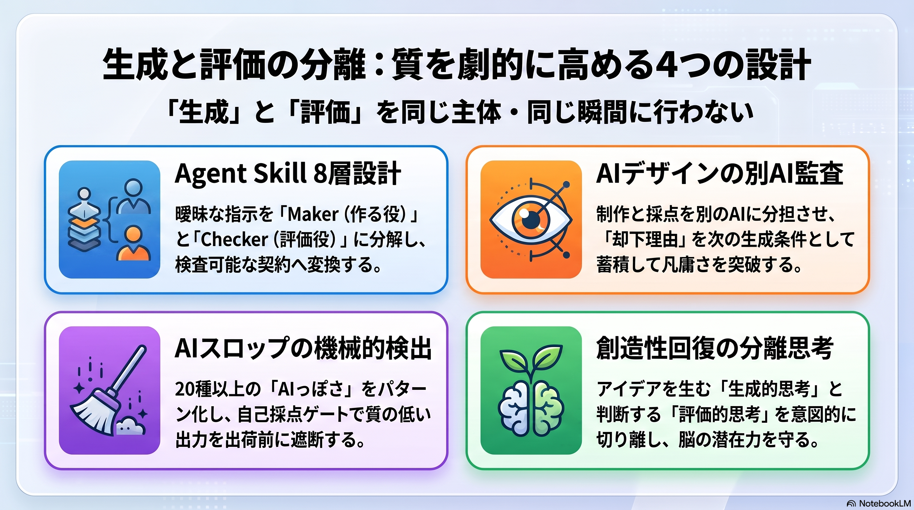
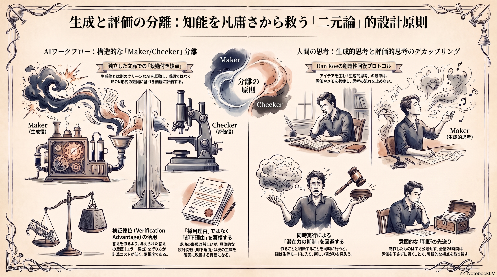

Weekly Insights: 2026-W31（2026-07-27〜08-02）
今週のホットトピック

- agent-skill-eight-layer-design Agent Skillの生成役と評価役を分離する8層設計 — 「高品質に作ってください」という曖昧な指示を、HARD GATES/DEFAULTS/PREFERENCESという検査可能な契約とMaker/Checkerの分離に変換するフレームワーク。
- ochiai-ai-design-method AIデザインは「別AIに監査させる」ことで凡庸さを抜ける — 落合式7原理の要は、制作と採点を同じAIにさせず、却下理由そのものを次の生成条件として蓄積すること。
- no-ai-slop AIスロップを機械的パターンで検出し自己採点するスキル — 20種以上の「AIっぽさ」パターンをカタログ化し、生成後に自身の作業をeval.mdの基準で検査するゲートを内蔵する（X bookmark 9,690）。
- creativity-recovery-protocol 創造性回復の核心は生成的思考と評価的思考の分離 — Dan Koeの7日間プロトコルは、入力遮断と消化の期間を置くことで「作る」判断と「評価する」判断を意図的に切り離す仕組みだ（X bookmark 15,406）。
深掘り
agent-skill-eight-layer-design Agent Skillの生成役と評価役を分離する8層設計 8層パイプラインの要は第6層Checker——生成した本人に自己採点させると「大きな問題ではない」と甘くなりやすいため、可能ならクリーンな文脈で別途起動し、評価結果を感想でなく criterion_id / expected / observed / evidence / severity を含む証拠付きJSONで返させる。この分離は、すべての指示をHARD GATES（違反したら不合格にする絶対条件）・DEFAULTS・PREFERENCESの3段階に変換する第4層Rule Compilerとセットで機能し、「ダミー実装は禁止」を「クリックしても状態が変化しない主要ボタンがあれば不合格」のような検査可能な条件へ書き換える。
ochiai-ai-design-method AIデザインは「別AIに監査させる」ことで凡庸さを抜ける 7原理の最後「一つのAIに制作と採点をさせない」は、目的整理・方向出し・監査・粗探しを別々のAIに分担させる実践フローの第5〜6ステップに直結する。特徴的なのは「採用理由でなく却下理由を保存する」という指摘だ——うまくいった理由は再現しにくいが、却下理由（「主役が二つ存在し視線が分散している」等の具体的な設計変数）は次の生成条件として確実に効くため、機械的に蓄積できる資産になるという。
no-ai-slop AIスロップを機械的パターンで検出し自己採点するスキル Peter Yangが公開したこのスキルは、二項対立・弱い帰属・見せかけの強い動詞といった20種以上のパターンを検出・除去した上で、編集後に自身の作業をeval.mdのPass/Fail基準に照らして検査するゲートを内蔵する。「良い文章を書け」という指示でなく検査可能なパターンリストへ落とし込むことで、生成と評価を同じ呼び出しの中でも構造的に分離している点がeval-loopと同型。
creativity-recovery-protocol 創造性回復の核心は生成的思考と評価的思考の分離 Dan Koeが7日間プロトコルの核として明かすのは、アイデアを生む「生成的思考」とそれを判断・編集する「評価的思考」を意図的に分離する仕組みだという位置づけだ。両者を同時に行うと生成側の潜在力が抑え込まれるとし、Day5-6では「アイデアが浮かんでもメモを取るのを我慢し、その思考の流れに乗り続ける」という、評価を意図的に先送りする具体的な作法を挙げる。対象がAIワークフローでなく人間の思考であるという点だけが、他の3トピックと違う。
今週の中心テーマ
生成と評価を同じ主体・同じ瞬間に行わない、という一つの設計原則が、Agent SkillのMaker/Checker分離からAIデザインの「別AIに監査させる」原則、no-ai-slopの自己検査ゲート、そしてDan Koeが創造性回復の核に据えた「生成的思考と評価的思考の分離」まで、対象がAIワークフローか人間の思考かが違うだけで同じ形で今週現れた。

根拠ページ
- agent-skill-eight-layer-design（→ 今週のホットトピック#1）
- ochiai-ai-design-method（→ 今週のホットトピック#2）
- no-ai-slop（→ 今週のホットトピック#3）
- creativity-recovery-protocol（→ 今週のホットトピック#4）
- cerebras-knowledge-base — Cerebrasの社内知識ベース。単一埋め込みテーブル＋全文検索/埋め込み/IDF/鮮度減衰のハイブリッド検索でSlack・コード・DBを横断する（X bookmark 12,615、今週最大の注目シグナルだが中心テーマとは別軸）
- graph-engineering — エージェント間の依存関係を「これは本当にエッジか」「バリアは要るか」という機械判定可能な語彙で設計する規律
- linguistic-hedging — 「〜な感じ」という曖昧語は、話者が負うべき定義コストを聞き手に丸投げする行為だという指摘
- parallel-e2e-testing — E2Eテストのflaky対策を「Iron Law」として個人の力量に依存させず機械強制する実践
- vibe-coding-design-gap — Vibe Codingだけでは「使われるプロダクト」にならない、という現場デザイナーの問題提起
- knowledge-work-plugins — Claude Desktop向け業務別公式プラグイン10種の紹介
- html-output-format — Anthropic公式のHTML出力フォーマット実例集
- video-shotcraft — Claude Code/Codexをモーションデザインスタジオに変えるショットレシピ集スキル
既存wikiとの接続
- eval-loop — 「生成→基準採点→閾値未満は出荷前に止める」という品質ゲートの一般形。今週の4トピックはいずれもこの型の異なるドメイン（Skill運用・AIデザイン制作・文章生成・人間の創造的思考）での実装にあたる
- skill-building-best-practices — Anthropic社内知見が「Product verification」を最高ROIのカテゴリと位置づける主張。agent-skill-eight-layer-designのChecker層・no-ai-slopのeval.mdは、この主張を具体的な機構へ落とし込んだ実装といえる
- multi-agent-patterns — マルチエージェント設計パターンの一般形。Maker/Checkerの分離、落合式の「別AIに監査させる」原則は、いずれもこのハブが扱う役割分担パターンの具体化
sugeta-san への問い
wiki-ingestスキルのカテゴリ判定・ページ生成は、生成した本人（同じ呼び出し内の同じモデル）がその出来を自己評価する構造になっていますか。それとも生成と評価が別の主体・別のタイミングに分かれていますか。
→ 現状のwiki-ingestはTier判定・カテゴリ判定・ページ生成を一括で行い、生成後に内容面の質を検査するChecker相当のステップは持ちません。validate_wiki.py によるlintは孤立ページやfrontmatter欠落といった構造的チェックに留まり、内容の質は見ません。もし内容面の質を上げたいなら、agent-skill-eight-layer-designのChecker層やno-ai-slopのeval.mdのように、生成後に軽量な検査ステップを足す余地はあります。ただしこのリポジトリは過去に独立審判（別モデルによる再採点）を誤検知支配で撤去した経緯があり（adversarial-panelの問いにも同種の記録あり）、同じ轍を踏まない設計が要ります。
今週の小アクション（5分）
.claude/skills/wiki-ingest/SKILL.md を開き、カテゴリ判定・ページ生成・インターリンクの各ステップの後に、生成物を検査する工程（Checker相当）が明文化されているか、それとも生成だけで完結しているかを5分で確認する。
いますぐAIと一緒に(コピペ)
以下をそのまま Claude Code に貼って、wiki-ingestスキルの生成と評価の分離状況を点検してください。
.claude/skills/wiki-ingest/SKILL.md を読み、以下を判定してください。
1. カテゴリ判定・ページ生成・インターリンクの各ステップのうち、
生成した本人が同じ呼び出し内で自己評価している箇所はどこか
2. 生成と評価を分離する余地があるとして、
wiki/concepts/agent-skill-eight-layer-design.md のChecker層
（証拠付きJSON: criterion_id/expected/observed/evidence/severity）
相当の軽量な検査ステップを追加する価値がある箇所はどこか
3. このリポジトリは過去に「独立審判（別モデル再採点）」を誤検知支配で
撤去した経緯がある。再導入せずに済む、もっと軽量な検査手段はあるか
参照: .claude/skills/wiki-ingest/SKILL.md, wiki/concepts/agent-skill-eight-layer-design.md
さらに読むべきページ
- cerebras-knowledge-base — 今週最大の注目シグナル（X bookmark 12,615）。自分のwiki query運用に「鮮度減衰」「ハイブリッド検索」という手薄な部分を照らす実例として読む価値がある
- skill-building-best-practices — Anthropic社内知見の9カテゴリ分類。agent-skill-eight-layer-designの8層設計と比較すると、Checker層の位置づけの違いが見える
- graph-engineering — エージェントオーケストレーションをノード/エッジ語彙で設計する規律。今週のwiki-ingest/lint/reviewの各ステップに当てはめると、どこが本当のバリアでどこがただのコード変換かを判定する材料になる